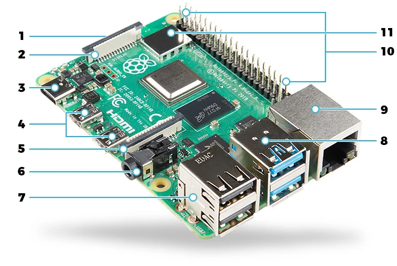
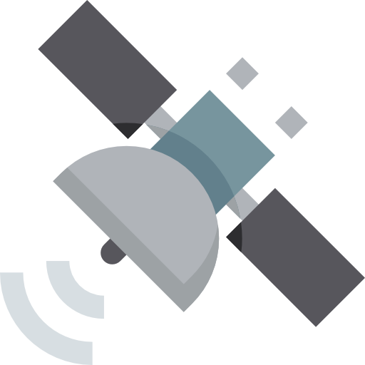
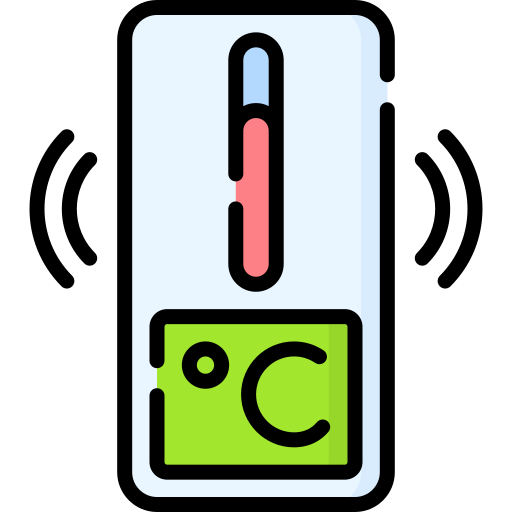
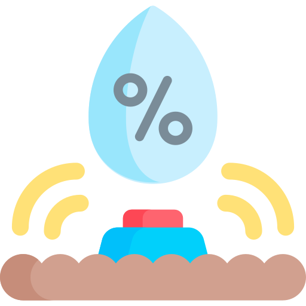
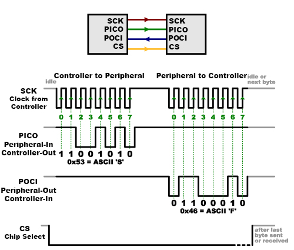

Raspberry Pi and Its I/Os
-
- microSD card slot
- DSI display port
- USB 3.0 power port
- Dual 4k HDMI ports
- CSI camera port
- 4-pole stereo audio
- Dual USB 2.0 ports

-
- WiFi & Bluetooth 5.0 radio
- 20x2 GPIO header
-
- Gigabit ethernet port
- Dual USB 3.0 ports
GPIO (General Purpose Input & Output): Programmable digital pins on a microcontroller
- Input for monitor: Reads digital voltage, HIGH (≈ 3.3V) / LOW (≈ 0V)
- Ouput for control: Drives digital voltage
Here is an overview of Raspberry Pi 4.
Many components here are for high-level computing: HDMI, USB, networking.
One powerful feature of the Raspberry Pi is the row of 20x2 GPIO pins along the top edge of the board
GPIO stands for General Purpose Input/Output.
These pins are programmable digital lines that function as the physical interface between the Raspberry Pi and the outside world.
They can read voltage levels (HIGH or LOW), or drive voltage to control external devices.
A Closer Look at the GPIO Pins
Let’s zoom in and see what is actually available on that 40-pin header. There’s a lot of things going on at this part of the board with 40 pins. But not all pins are equal.
Some are power. Some are ground. Some are general digital I/O. Some are wired internally to communication controllers.
Now, while we could manually toggle GPIO pins to send bits, that would be tedious and error-prone.
While GPIO gives us raw digital control, Raspberry Pi provides three main specialized protocols that organize multiple GPIO lines into different ways of communication with external devices such as ….
Instead, the Raspberry Pi includes hardware controllers that implement standardized communication protocols.
These protocols organize multiple GPIO pins into structured digital conversations.
A Closer Look at the GPIO Pins
Main serial communication protocols besides raw GPIO:
| Protocol | Pins | Clock | Speed | Multi-Device? | Best For |
|---|---|---|---|---|---|
| UART | 2 | No (Asynchronous) | low to Moderate | No (Point-to-point) | Long-distance communication  |
| I²C | 2 | Yes | Moderate | Yes (Addressed bus) | Many simple sensors   |
| SPI | 4+ | Yes | High | Yes (Chip-select lines) | High-speed sensors/memory |
There are three main serial communication protocols besides raw GPIO.
UART: uses two pins named as TX (transmit) and RX (receive) for asynchronous communication Simple, asynchronous, point-to-point. Good for long-distance or debugging.
I²C: uses two pins named SDA (serial data line) for data exchange and SCL (serial clock line) which functions as a clock is like a shared bus with addresses. Many devices can share the same two wires.
SPI: Four or more wires. is like private direct lines with speed. Each device has its own chip-select.
Quick Quiz: Which Interface Would You Choose?
You need to connect the following devices to a Raspberry Pi: 1. GPS: outputs low-rate serial text data in a point-to-point configuration -> UART 2. 5 temperature & humidity sensors: low bandwidth, multiple devices, each sensor has an address 3. Small OLED display: Needs higher data rate than sensors, frequent updates, ften designed with SPI interface. 4. A blinking LED: Just HIGH and LOW. Raw GPIO. No protocol needed.
Think: - Speed requirement? - distance - Number of devices? - Complexity?
Translate Analog to Digital
- Raspberry Pi GPIO is digital only
- Cannot measure continuous voltage
ADC (Analog-to-Digital Converter):
- Continuous voltage → Discrete digital value
- Resolution — precision in amplitude, e.g., 10-bit ADC → 1024 discrete levels
- Sampling rate — precision in time
So we now know how digital devices talk to each other.
But there’s a gap you might have noticed:
All of these protocols assume the signal is already digital.
But the real world is analog. Many physical sensors are not digital.
A gas sensor, for example, may output a voltage proportional to concentration.
That voltage is continuous. It’s not just 0 or 1.
The Raspberry Pi GPIO cannot measure continuous voltage. It only detects HIGH or LOW.
So how do we convert that continuous voltage into something the processor understands?
That’s why we need an ADC.
An ADC samples the input voltage and converts it into a binary number.
Resolution determines how fine the voltage precision is. If it’s a 10-bit ADC, it maps the voltage range into 1024 discrete levels.
Sampling rate determines how often we measure it.
Resolution: How precise each reading is Sampling Rate: How often readings are taken
Think: resolution is spatial precision, sampling rate is temporal precision. Think of it like taking photos: • Resolution = image sharpness (pixel density) • Sampling rate = frames per second If resolution is low → blurry values. If sampling rate is low → you miss fast events.
Since Raspberry Pi has no built-in ADC, we connect an external ADC chip.
This is a transition slide (TODO)
A case study: A low-cost air-quality node on your rooftop
Smoke sensor (analog voltage) → MCP3008 ADC (digital number) → Raspberry Pi via SPI → logging/alerts
When I was looking up Kelowna, one thing kept coming up — wildfire season is not a rare event here. It’s practically a recurring guest.
So imagine we build a tiny “smoke snitch” — a low-cost air-quality node sitting quietly on a rooftop, constantly watching the air and ready to complain the moment smoke levels rise.
The smoke sensor gives us an analog voltage — not something the Raspberry Pi can directly understand. So we add an ADC to translate that voltage into numbers, and we use SPI to shuttle those numbers into the Pi.
Now let’s open the hood and see how those bits actually travel across the four SPI wires before we write the code.
4-Wire SPI Model

A typical SPI transaction:
- Pulls CS low to select device
- Generates clock pulses on SCLK
- On each clock edge:
- One bit shifts out on PICO
- One bit shifts in on POCI
- Releases CS high
Clock ticks → Bits shift → Data sampled
↪ in both directions at the same time
Before stepping into the code, we need to understand exactly how SPI moves data electrically.
Let’s slow down and look at the four wires. Each one has a very specific job. • SCLK is generated only by the controller. • MOSI (PICO) carries bits from controller to peripheral device. • MISO (POCI) carries bits back from device to controller. • CS enables exactly one peripheral at a time.
Once CS goes low, the controller starts generating clock pulses.
Now point at the waveform: • On every clock edge, a bit shifts out. • At the same time, another bit shifts in. • After 8 clock pulses, one byte is exchanged.
SPI is synchronous — clock defines timing Full-duplex → Send and receive simultaneously
Even if we only care about receiving data, we still must send dummy bits to generate clock pulses.